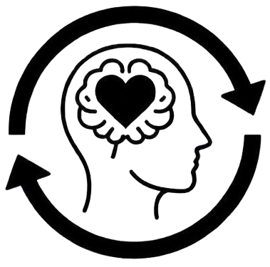

Hearing
Sign language to text and speech, so deaf and hearing people can talk.

Maisha Inclusive Digital Communication empowers persons with disabilities through inclusive technology: bridging communication gaps, supporting mental health and building a more connected world.
“I would like some water, please.”
“A society where people with disability are able to communicate freely through technology.”
Ensuring effective communication for people with mental disability and hearing impairment through technology and AAC, empowering both young and old people.
Sign language to text and speech, so deaf and hearing people can talk.
Audio-first tools and text to speech, so information can be heard as well as read.
AAC devices and apps that give non-verbal people a voice.
Simple interfaces, visual and audio therapy tools, and peer support.
Many persons with hearing impairments struggle with isolation and depression because of communication barriers. Accessible, affordable tools are hard to find.The challenge we work on
Every objective is rooted in lasting impact for persons with disabilities across education, health and daily life.
Empower people with disability in education, health and livelihood through AAC technology.
Innovate local AAC tools adapted to our community's needs and contexts.
Make the AAC tools and resources people need available locally.
Use AI for mental health support and communication assistance.
A suite of inclusive digital tools combining AAC technology, AI and accessible mental health platforms.
Augmentative and Alternative Communication tools, such as the Pocket Go-Talk 5-Level Communication Device, help non-verbal users express themselves.
Camera-based AI detects sign language and turns it into text or speech, so deaf and hearing people can talk directly.
Easy-to-use platforms with visual and audio therapy tools, designed for persons with disabilities.
AI apps that convert speech to text and text to speech, so communication works in both directions.
Moderated online groups where people share experiences and get mental wellness guidance from trained facilitators.
Locally adapted AAC tools that are affordable and relevant, so communities with limited resources can use them.
Children and adults with disabilities take part fully in learning, from classroom communication to digital study.
Less isolation and depression, through the ability to connect, express themselves and reach support.
Access to work, services and social spaces with dignity and independence.
Peer groups and accessible platforms so no one is left behind.
Augmentative and Alternative Communication: tools and methods, from picture boards to speech apps, that help people who cannot rely on speech alone.
People with hearing, visual, speech or cognitive impairments, young and old, plus the families, schools and clinics who support them.
Donors, partners, volunteers and people who need our tools are all welcome. Email us and we will reply with next steps.
Browse the AAC tools page to see what exists for each need, then contact us to talk it through.
Donor, partner, volunteer or someone who needs our tools: Maisha has a place for you.
Contact us